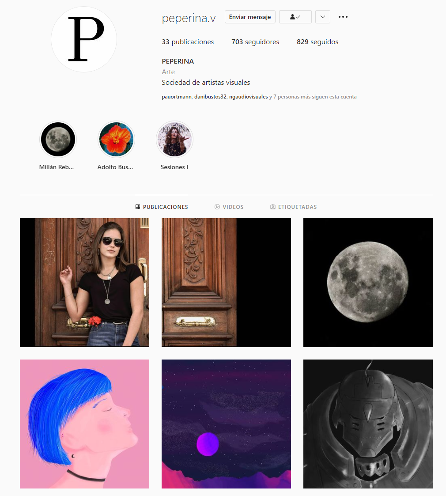

Experiencia laboral
• Bye gluten
Diseño y edición | Tandil 2020 | Ig: @byeglutenn
• Club “Los 50”
Cobranza en estacionamiento | Tandil 2016-2017
• Teatro San Martín
Boletería, cobranza | Azul 2014-2015
Audiovisual
• Realización cortometraje “Frenesí”
Co-guionista, Codirector, Director de fotografía, Co-director de Arte | Tandil 2018-2020
• Agencia de fotografía “Peperina”
Iluminación | Tandil 2017-2018 | Instagram: @PEPERINA.V
